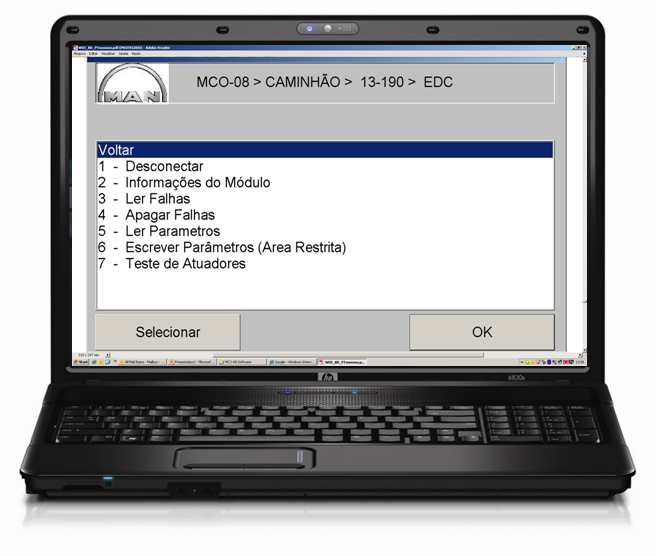
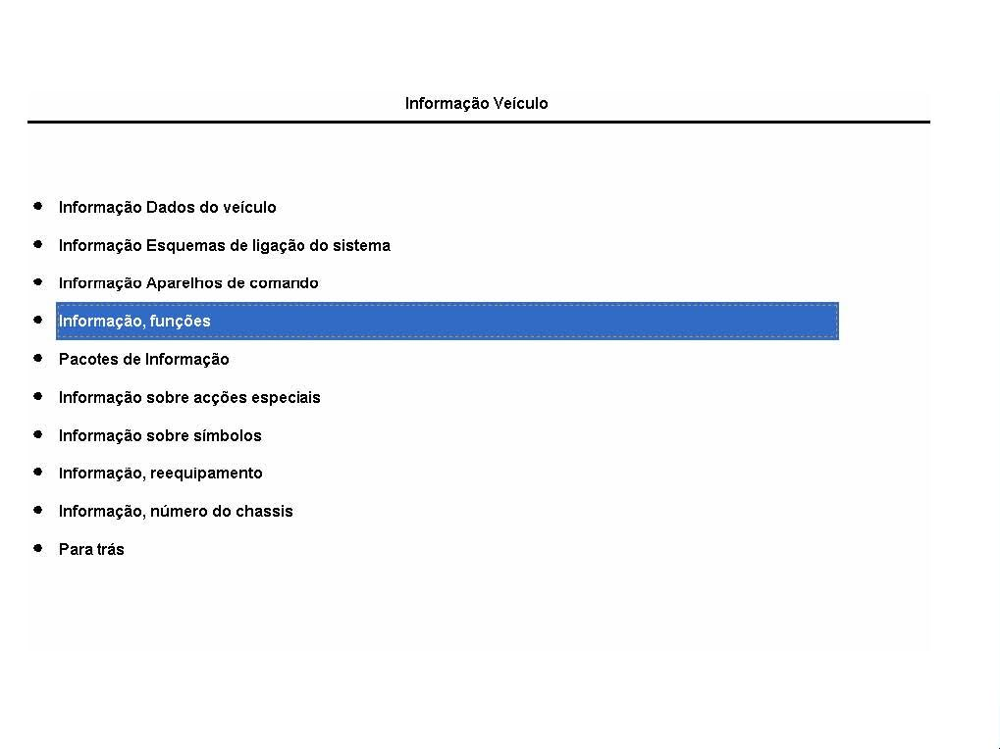
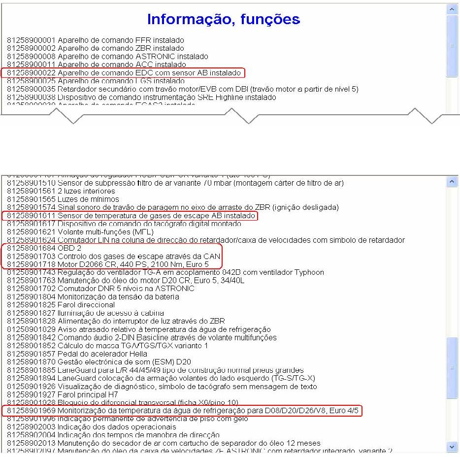

|

Descrição
Parâmetro de função
(FUP)
O
parâmetro de função é um elemento de configuração do ficheiro de dados
do veículo. Este contém um ou vários parâmetros (também de vários
aparelhos de comando) para ativar uma das funcionalidades específicas
do veículo e de adaptá-la às condições do respectivo veículo.
O ficheiro de dados do veículo é
composto, entre
outros, por uma variedade de parâmetros de função, os quais descrevem
em conjunto as funcionalidades programáveis do veículo.
Uma alteração dos parâmetros de
função (FUP) por
regra apenas é necessária após uma substituição de componentes, p.ex.
do aparelho de comando e/ou no seio de ações de melhoria. Neste caso é
necessário efetuar a encomenda do ficheiro de dados de reequipamento.
Esta pode ser efetuada no âmbito das ações (informações de assistência
- SI) em muitos casos online (MCO-08) ou por encomenda através do
centro de competência, junto de departamento ESC. Procedimento do modo
de encomenda no departamento ESC, ver SI 3237SM.
Comando do motor EDC 7
O
resumo seguinte apenas tem caráter informativo, visto que o equipamento
do veículo tipicamente sofre alterações, e pretende esclarecer a
relação dos parâmetros de função para equipamentos especiais.
Exemplo: EDC 7
|
Designação do parâmetro
de função
|
Número de peça
|
| Aparelho de comando EDC com sensor AB instalado |
81.25890-0022 |
| Travão do motor para motor D2066 CR com EVBec |
81.25890-1039 |
| Compressor de ar de 1 cilindro em D20/D26 |
81.25890-1042 |
| Limite de rotações 1 1300 Rpm |
81.25890-1134 |
| Limite de rotações 2 1400 Rpm |
81.25890-1135 |
| Aquecimento do filtro de combustível (conector X6/Pin 9) |
81.25890-1157 |
| Sensor do nível do óleo D20 34/40L, Inclinação do motor 3º
(cárter interior cimentado) |
81.25890-1426 |
| Diagrama característico do pedal do acelerador D28
variante 2 |
81.25890-1142 |
| Sensor de subpressão filtro de ar variante 70 mbar
(montagem cárter de filtro de ar) |
81.25890-1510 |
| Sensor de temperatura de gases de escape AB instalado |
81.25890-1611 |
| OBD 1 com medição de controlo de NOx |
81.25890-1683 |
| Ativação da válvula de passagem de ar comprimido através
do EDC (montada no motor) |
81.25890-1702 |
| Controlo dos gases de escape através da CAN |
81.25890-1703 |
| Motor D2066 CR, 440 PS, 2100 Nm, Euro 5 |
81.25890-1718 |
| Gestão eletrônica de som (ESM) D20 |
81.25890-1870 |
| Catalisador motor V_D20_13 WD |
81.25890-1923 |
| Valores característicos do pré-catalisador V_D20_13 |
81.25890-1924 |
| Valores característicos do catalisador SCR V_D20_13 |
81.25890-1925 |
| Monitorização da temperatura da água de refrigeração para
D08/D20/D26/V8, Euro 4/5 |
81.25890-1969 |
| Redução da potência em falhas OBD, variante 2 |
81.25890-2117 |
| Arranque por incandescência com Common Rail |
81.25890-2132 |
Uma verificação sobre se ou quais os parâmetros de
função foram "instalados", pode ser controlado da seguinte forma com
MCO-08:
⇒
Menu principal ⇒ Programação do veículo ⇒ Informação ⇒ Informação
relativa ao veículo a partir do ficheiro de dados do veículo e do
ficheiro de dados de reequipamento ⇒ Ficheiro de dados do veículo ⇒ A
partir do veículo, (a partir do computador de guia do veículo- Power train manager PTM).
Após a leitura do ficheiro de dados do veículo é
apresentado um menu de seleção com diversos grupos de informação.

⇒ Selecione a opção de menu Informação, funções e
pressione a tecla <ENTER>.
Neste
ponto do menu também se pode verificar, se necessário, se o FUP
81.25890-2135 "Modo RME (Biodiesel)" está eventualmente instalado no
veículo.
Exemplos de ecrãs.

|